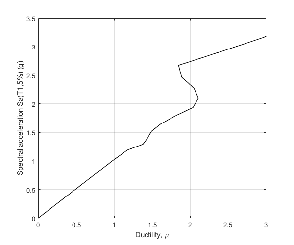

verification Incremental dynamic analysis for ductility response
Contents
Reference
Vamvatsikos, D., & Cornell, C. A. (2002). Incremental dynamic analysis. Earthquake engineering & structural dynamics, 31(3), 491-514.
Description
The ductility response IDA curve of an elastoplastic SDOF system excited by the Loma Prieta, 1989, Halls Valley earthquake (component 090) is constructed at multiple levels of shaking, and compared to the curve shown in Figure 4(a) of the above reference. The SDOF system has T=1 sec and critical damping ratio 5%
Earthquake motion
Load earthquake data
GM='LomaPrietaHallsValley90.dat'; fid=fopen(GM,'r'); text=textscan(fid,'%f %f'); fclose(fid); t=text{1,1}; dt=t(2)-t(1); xgtt=text{1,2};
Perform IDA analysis
Switch
sw='ida';
Eigenperiod
T=1;
Scaling factors
lambdaF=logspace(log10(0.01),log10(30),100);
Type of IDA analysis
IM_DM='Sa_mu';
Mass
m=1;
Yield displacement
uy=0.25;
Post yield stiffness factor
pysf=0.01;
Fraction of critical viscous damping
ksi=0.05;
Algorithm to be used for the time integration
AlgID='U0-V0-Opt';
Set initial displacement
u0=0;
Set initial velocity
ut0=0;
Minimum absolute value of the eigenvalues of the amplification matrix
rinf=1;
Maximum tolerance for convergence
maxtol=0.01;
Maximum number of iterations per increment
jmax=200;
Infinitesimal variation of acceleration
dak=eps;
Apply OpenSeismoMatlab
S1=OpenSeismoMatlab(dt,xgtt,sw,T,lambdaF,IM_DM,m,uy,pysf,ksi,AlgID,...
u0,ut0,rinf,maxtol,jmax,dak);
Plot the IDA curve
Initialize figure
figure() % Plot the IDA curve plot(S1.DM,S1.IM/9.81,'k','LineWidth',1) % Finalize figure grid on xlabel('Ductility, \mu') ylabel('Spectral acceleration Sa(T1,5%) (g)') xlim([0,3]) ylim([0,3.5]) drawnow; pause(0.1)
Copyright
Copyright (c) 2018-2023 by George Papazafeiropoulos
- Major, Infrastructure Engineer, Hellenic Air Force
- Civil Engineer, M.Sc., Ph.D.
- Email: gpapazafeiropoulos@yahoo.gr